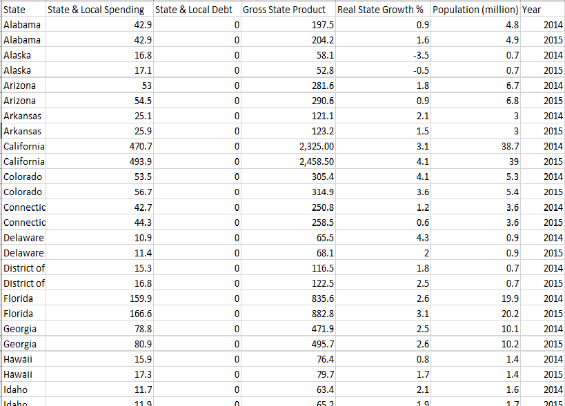
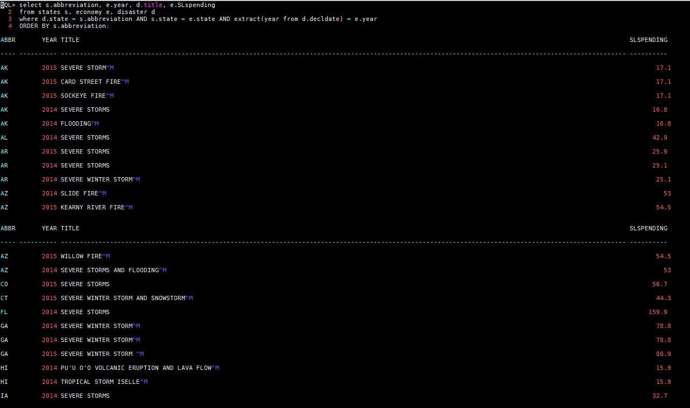
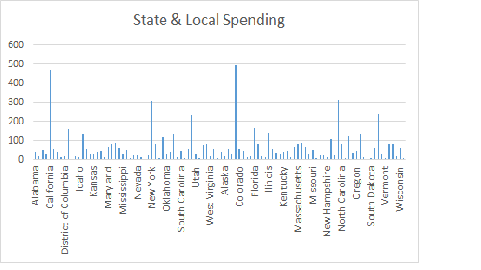

Dataset We Use (Economy & Disaster)

Queries to get the data
I just use simple queries to trim the dataset to be just the staet the year and the disaster title, and the state spending for that year. Then we take the average the disaster and decide will disaster take affect
Analytic
According to the analytic, California and Colorado are the two highest spending in the States. I believed 2014's spending are way more higher than 2015's spending.